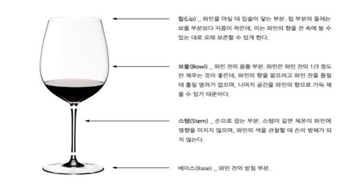
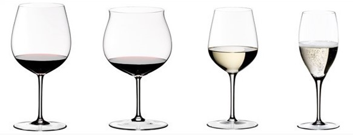

와인잔
와인을 마실 때 향을 음미하는 것은 빼놓을 수 없는 요소다. 와인 잔에 와인의 향이 담겨 있느냐 아니냐에 따라 와인의 맛이 달라지기 때문이다. 예를 들어 잔 입구가 큰 와인 잔으로 와인을 마시면 자연스레 머리가 숙여지면서 와인이 혀에 닿는 부위가 넓어지며, 반대로 입구가 좁은 잔은 고개가 뒤로 젖혀져 혀에 닿는 부위가 좁아지고 와인이 혀의 앞부분에 먼저 닿기 때문에 같은 와인이라도 다른 맛을 느끼게 되는 것이다.
와인 잔 입구가 나팔처럼 바깥쪽으로 벌어져있다면 와인이 향을 많이 잃게 되어 와인의 맛이 덜하며, 반대로 입구가 안쪽으로 둥글게 휜 와인 잔은 와인의 향을 보존하고 있기 때문에 그 와인의 맛이 더욱 복합적으로 느껴진다. 그리고 향기가 약하고 가벼운 와인을 큰 용량의 볼륨 있는 와인 잔에 따르면, 원래부터 와인에 향기가 그다지 없던 탓에 향기가 더욱 약하게 느껴진다. 따라서 향기의 강약에 맞춰 와인 잔을 선택하면 좋다.

▷ 보르도 레드 와인 잔
대개 레드 와인은 화이트 와인 잔보다 좀더 크며, 와인의 향기를 더욱 풍성하게 느낄 수 있도록 해준다. 보르도 레드 와인 잔은 전형적인 튤립 모양으로, 프랑스 보르도 스타일의 와인처럼 타닌이 강한 와인을 위해 고안되었는데, 타닌의 텁텁함을 줄이고 과일향과 조화를 이룰 수 있도록 글라스의 경사각이 완만하다. 와인이 혀끝부터 안쪽으로 넓게 퍼질 수 있도록 입구 경사각이 작으며 볼은 넓다. 또한 와인이 숨쉴 수 있는 공간을 확보해 줌으로써 다양한 부케와 풍부한 아로마를 느낄 수 있게 해준다.
▷ 부르고뉴 레드 와인 잔
부르고뉴 레드 와인 잔은 보르도 와인 잔보다 약간 짧고 뚱뚱하다. 특히 보울 부분이 더 볼록하고 잔 입구로 갈수록 점점 좁아진다. 보울이 넓으면 공기와 접촉하는 와인의 면적이 넓어지므로 와인의 향을 더욱 풍부하게 맡을 수 있다. 프랑스 부르고뉴의 정상급 와인이나 이탈리아의 바롤로, 바르바레스코 등을 이 잔에 담았을 때 와인의 풍미가 최대한 발산된다. 특히 부르고뉴의 주요 포도 품종인 피노 누아는 카베르네 소비뇽에 비해 타닌이 적으나 신 맛이 강하므로 와인 잔의 볼이 커야 하고, 좀더 오랜 시간 향을 담기 위하여 글라스의 경사각이 크다. 값이 싼 와인은 향의 수준이 낮으므로 이런 잔에 따라 마시면 향이 부족하게 느껴져 더 싸구려 와인처럼 느껴지기 십상이다.
▷ 화이트 와인 잔
화이트 와인은 기본적으로 타닌 성분이 없기 때문에 볼의 크기가 작아도 된다. 화이트 와인 잔은 레드 와인 잔보다 작으며, 차게 마시는 화이트 와인의 특성 때문에 온도가 올라가지 않도록 용량을 작게 만든다. 또한 레드 와인 잔보다 덜 오목하며, 화이트 와인의 상큼한 맛을 더 잘 느낄 수 있도록 와인이 혀 앞부분에 닿도록 디자인되어 있다.
▷ 스파클링 와인 잔
스파클링 와인 잔은 길쭉한 튤립(또는 플루트, flute) 모양으로, 와인의 탄산가스가 오래 보존될 수 있고 거품이 올라오는 것을 잘 관찰할 수 있다. 좋은 스파클링 와인일수록 조그만 기포들이 길쭉한 와인 잔 속에서 끊임없이 솟아오르는 것을 볼 수 있다. 고급 샴페인의 경우 끊임없이 발생하는 작은 기포와 병 속에서 일어나는 2차 발효에서 생긴 독특한 향이 특징인데, 이러한 기포와 향을 잘 간직하기 위해 샴페인 글라스는 튤립 모양이나 계란형의 긴 잔이어야 하며, 입구는 좁고 잔의 높이가 높아 샴페인의 고운 기포를 감상하며 즐길 수 있게 디자인되어 있다.

❰ 왼쪽부터, 보르도 레드 와인 잔, 부르고뉴 레드 와인 잔, 화이트 와인 잔, 스파클링 와인 잔 ❱